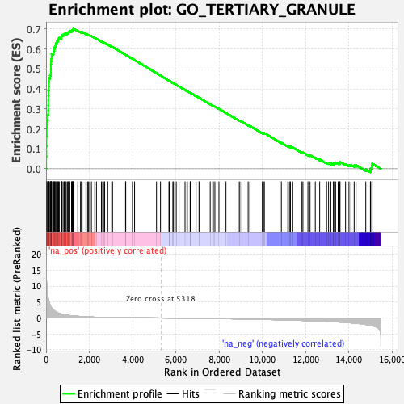
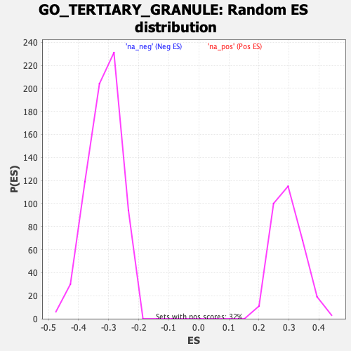

| | | Dataset | DE_genes |
| Phenotype | NoPhenotypeAvailable |
| Upregulated in class | na_pos |
| GeneSet | GO_TERTIARY_GRANULE |
| Enrichment Score (ES) | 0.70039797 |
| Normalized Enrichment Score (NES) | 2.3571208 |
| Nominal p-value | 0.0 |
| FDR q-value | 0.0 |
| FWER p-Value | 0.0 |
Table: GSEA Results Summary

Fig 1: Enrichment plot: GO_TERTIARY_GRANULE
Profile of the Running ES Score & Positions of GeneSet Members on the Rank Ordered List
| PROBE | GENE SYMBOL | GENE_TITLE | RANK IN GENE LIST | RANK METRIC SCORE | RUNNING ES | CORE ENRICHMENT | | 1 | FCER1G | | | 8 | 15.109 | 0.0612 | Yes |
| 2 | OLR1 | | | 15 | 12.741 | 0.1129 | Yes |
| 3 | CLEC4D | | | 19 | 12.498 | 0.1638 | Yes |
| 4 | GPR84 | | | 29 | 10.842 | 0.2076 | Yes |
| 5 | MMP8 | | | 43 | 9.109 | 0.2440 | Yes |
| 6 | CRISP3 | | | 81 | 6.793 | 0.2693 | Yes |
| 7 | CD53 | | | 101 | 6.147 | 0.2932 | Yes |
| 8 | FPR1 | | | 103 | 6.054 | 0.3179 | Yes |
| 9 | SIGLEC14 | | | 105 | 5.976 | 0.3423 | Yes |
| 10 | DOK3 | | | 107 | 5.938 | 0.3665 | Yes |
| 11 | CEACAM1 | | | 111 | 5.843 | 0.3902 | Yes |
| 12 | CDA | | | 121 | 5.590 | 0.4125 | Yes |
| 13 | TCN1 | | | 129 | 5.405 | 0.4341 | Yes |
| 14 | PGLYRP1 | | | 144 | 5.023 | 0.4537 | Yes |
| 15 | LILRB2 | | | 183 | 4.180 | 0.4683 | Yes |
| 16 | LTF | | | 220 | 3.593 | 0.4807 | Yes |
| 17 | MGAM | | | 222 | 3.570 | 0.4952 | Yes |
| 18 | CYSTM1 | | | 224 | 3.545 | 0.5096 | Yes |
| 19 | CHIT1 | | | 225 | 3.543 | 0.5241 | Yes |
| 20 | CYBB | | | 231 | 3.449 | 0.5379 | Yes |
| 21 | CLEC12A | | | 243 | 3.326 | 0.5508 | Yes |
| 22 | CR1 | | | 256 | 3.192 | 0.5630 | Yes |
| 23 | TNFAIP6 | | | 257 | 3.183 | 0.5760 | Yes |
| 24 | SIGLEC5 | | | 336 | 2.547 | 0.5814 | Yes |
| 25 | FPR2 | | | 349 | 2.445 | 0.5906 | Yes |
| 26 | HBB | | | 380 | 2.305 | 0.5980 | Yes |
| 27 | FCAR | | | 385 | 2.274 | 0.6071 | Yes |
| 28 | CD55 | | | 413 | 2.110 | 0.6139 | Yes |
| 29 | CAMP | | | 448 | 1.941 | 0.6197 | Yes |
| 30 | CTSS | | | 450 | 1.936 | 0.6275 | Yes |
| 31 | ATP6V0C | | | 499 | 1.776 | 0.6316 | Yes |
| 32 | CFP | | | 501 | 1.767 | 0.6388 | Yes |
| 33 | HP | | | 546 | 1.597 | 0.6425 | Yes |
| 34 | B2M | | | 558 | 1.566 | 0.6481 | Yes |
| 35 | FTH1 | | | 581 | 1.515 | 0.6529 | Yes |
| 36 | CLEC5A | | | 611 | 1.444 | 0.6569 | Yes |
| 37 | ITGAX | | | 709 | 1.262 | 0.6557 | Yes |
| 38 | PTPRN2 | | | 711 | 1.256 | 0.6608 | Yes |
| 39 | CSTB | | | 717 | 1.248 | 0.6656 | Yes |
| 40 | SIRPA | | | 728 | 1.233 | 0.6700 | Yes |
| 41 | LYZ | | | 785 | 1.131 | 0.6709 | Yes |
| 42 | CD177 | | | 833 | 1.072 | 0.6723 | Yes |
| 43 | PTPN6 | | | 846 | 1.047 | 0.6758 | Yes |
| 44 | CD33 | | | 899 | 0.983 | 0.6764 | Yes |
| 45 | CD47 | | | 929 | 0.947 | 0.6784 | Yes |
| 46 | RHOA | | | 983 | 0.880 | 0.6785 | Yes |
| 47 | ITGAM | | | 1010 | 0.840 | 0.6802 | Yes |
| 48 | LAMP2 | | | 1039 | 0.810 | 0.6817 | Yes |
| 49 | OLFM4 | | | 1054 | 0.798 | 0.6841 | Yes |
| 50 | RAP2C | | | 1062 | 0.787 | 0.6868 | Yes |
| 51 | ADAM8 | | | 1080 | 0.771 | 0.6889 | Yes |
| 52 | STOM | | | 1094 | 0.759 | 0.6911 | Yes |
| 53 | QPCT | | | 1177 | 0.696 | 0.6886 | Yes |
| 54 | FOLR3 | | | 1198 | 0.680 | 0.6901 | Yes |
| 55 | ARL8A | | | 1204 | 0.676 | 0.6925 | Yes |
| 56 | DYNLL1 | | | 1214 | 0.670 | 0.6947 | Yes |
| 57 | PTX3 | | | 1243 | 0.648 | 0.6955 | Yes |
| 58 | CNN2 | | | 1246 | 0.643 | 0.6980 | Yes |
| 59 | PTAFR | | | 1254 | 0.637 | 0.7002 | Yes |
| 60 | VAMP1 | | | 1290 | 0.618 | 0.7004 | Yes |
| 61 | CYBA | | | 1467 | 0.534 | 0.6911 | No |
| 62 | PLD1 | | | 1593 | 0.474 | 0.6849 | No |
| 63 | CST3 | | | 1638 | 0.457 | 0.6839 | No |
| 64 | LRG1 | | | 1650 | 0.453 | 0.6850 | No |
| 65 | CTSH | | | 1667 | 0.448 | 0.6858 | No |
| 66 | GOLGA7 | | | 1845 | 0.373 | 0.6758 | No |
| 67 | TMEM179B | | | 1918 | 0.350 | 0.6725 | No |
| 68 | ENPP4 | | | 1966 | 0.336 | 0.6708 | No |
| 69 | LAIR1 | | | 2021 | 0.320 | 0.6686 | No |
| 70 | ASAH1 | | | 2096 | 0.298 | 0.6650 | No |
| 71 | CYFIP1 | | | 2251 | 0.254 | 0.6560 | No |
| 72 | GAA | | | 2329 | 0.239 | 0.6519 | No |
| 73 | LAMTOR3 | | | 2557 | 0.198 | 0.6379 | No |
| 74 | GGH | | | 2615 | 0.187 | 0.6349 | No |
| 75 | TBC1D10C | | | 2683 | 0.179 | 0.6313 | No |
| 76 | ATP8B4 | | | 2709 | 0.175 | 0.6304 | No |
| 77 | CXCL1 | | | 2830 | 0.158 | 0.6232 | No |
| 78 | ADAM10 | | | 2845 | 0.156 | 0.6229 | No |
| 79 | LILRA3 | | | 3035 | 0.137 | 0.6111 | No |
| 80 | ATP6AP2 | | | 3059 | 0.135 | 0.6102 | No |
| 81 | SLC11A1 | | | 3068 | 0.134 | 0.6102 | No |
| 82 | YPEL5 | | | 3674 | 0.088 | 0.5711 | No |
| 83 | ITGB2 | | | 3683 | 0.088 | 0.5709 | No |
| 84 | PRSS3 | | | 3992 | 0.070 | 0.5511 | No |
| 85 | STX7 | | | 4091 | 0.065 | 0.5450 | No |
| 86 | RAC1 | | | 5105 | 0.011 | 0.4789 | No |
| 87 | IDH1 | | | 5289 | 0.002 | 0.4670 | No |
| 88 | RAP2B | | | 5681 | -0.019 | 0.4415 | No |
| 89 | CD300A | | | 5692 | -0.020 | 0.4410 | No |
| 90 | DYNC1LI1 | | | 5860 | -0.030 | 0.4302 | No |
| 91 | LAMP1 | | | 5890 | -0.032 | 0.4284 | No |
| 92 | CD58 | | | 6017 | -0.040 | 0.4204 | No |
| 93 | RAB14 | | | 6146 | -0.049 | 0.4122 | No |
| 94 | STXBP2 | | | 6423 | -0.067 | 0.3945 | No |
| 95 | STXBP3 | | | 6513 | -0.074 | 0.3890 | No |
| 96 | OSCAR | | | 6529 | -0.074 | 0.3883 | No |
| 97 | SLC2A3 | | | 6660 | -0.085 | 0.3802 | No |
| 98 | PRCP | | | 6670 | -0.086 | 0.3799 | No |
| 99 | NIT2 | | | 6689 | -0.087 | 0.3791 | No |
| 100 | VAMP8 | | | 6696 | -0.088 | 0.3791 | No |
| 101 | ORM1 | | | 6933 | -0.106 | 0.3641 | No |
| 102 | NRAS | | | 7069 | -0.116 | 0.3558 | No |
| 103 | CTSD | | | 7096 | -0.118 | 0.3546 | No |
| 104 | TCIRG1 | | | 7587 | -0.160 | 0.3232 | No |
| 105 | DSP | | | 7705 | -0.171 | 0.3163 | No |
| 106 | TRPM2 | | | 7731 | -0.173 | 0.3154 | No |
| 107 | MMP9 | | | 7803 | -0.179 | 0.3115 | No |
| 108 | TIMP2 | | | 7990 | -0.197 | 0.3001 | No |
| 109 | NBEAL2 | | | 8315 | -0.231 | 0.2799 | No |
| 110 | HGSNAT | | | 8883 | -0.296 | 0.2441 | No |
| 111 | STBD1 | | | 8954 | -0.304 | 0.2408 | No |
| 112 | SPTAN1 | | | 9051 | -0.317 | 0.2358 | No |
| 113 | PGM1 | | | 9340 | -0.351 | 0.2185 | No |
| 114 | SNAP25 | | | 9419 | -0.361 | 0.2149 | No |
| 115 | ALDOA | | | 9996 | -0.446 | 0.1791 | No |
| 116 | TMEM63A | | | 10022 | -0.450 | 0.1793 | No |
| 117 | CD59 | | | 10049 | -0.454 | 0.1795 | No |
| 118 | ILF2 | | | 10089 | -0.460 | 0.1788 | No |
| 119 | DBNL | | | 10875 | -0.579 | 0.1299 | No |
| 120 | PLAU | | | 11174 | -0.631 | 0.1131 | No |
| 121 | CD93 | | | 11248 | -0.646 | 0.1109 | No |
| 122 | NCKAP1L | | | 11295 | -0.655 | 0.1106 | No |
| 123 | LAMTOR1 | | | 11400 | -0.679 | 0.1066 | No |
| 124 | PKP1 | | | 11812 | -0.764 | 0.0829 | No |
| 125 | ALDOC | | | 11871 | -0.777 | 0.0823 | No |
| 126 | COPB1 | | | 12103 | -0.831 | 0.0706 | No |
| 127 | ARMC8 | | | 12201 | -0.855 | 0.0678 | No |
| 128 | ATP11A | | | 12443 | -0.915 | 0.0558 | No |
| 129 | LAMTOR2 | | | 12646 | -0.965 | 0.0465 | No |
| 130 | PPBP | | | 12965 | -1.066 | 0.0301 | No |
| 131 | GSDMD | | | 13056 | -1.093 | 0.0287 | No |
| 132 | UBR4 | | | 13160 | -1.123 | 0.0266 | No |
| 133 | TSPAN14 | | | 13281 | -1.167 | 0.0235 | No |
| 134 | NFASC | | | 13293 | -1.172 | 0.0276 | No |
| 135 | AP2A2 | | | 13339 | -1.187 | 0.0295 | No |
| 136 | SNAP23 | | | 13382 | -1.206 | 0.0317 | No |
| 137 | DIAPH1 | | | 13500 | -1.253 | 0.0292 | No |
| 138 | LGALS3 | | | 13580 | -1.285 | 0.0293 | No |
| 139 | LTA4H | | | 13583 | -1.286 | 0.0344 | No |
| 140 | PTPRB | | | 13842 | -1.398 | 0.0233 | No |
| 141 | METTL7A | | | 14000 | -1.471 | 0.0191 | No |
| 142 | ANO6 | | | 14092 | -1.530 | 0.0194 | No |
| 143 | TMC6 | | | 14240 | -1.624 | 0.0164 | No |
| 144 | SVIP | | | 14326 | -1.673 | 0.0177 | No |
| 145 | KCNAB2 | | | 14777 | -2.043 | -0.0033 | No |
| 146 | ATAD3B | | | 14990 | -2.289 | -0.0078 | No |
| 147 | QSOX1 | | | 15001 | -2.303 | 0.0010 | No |
| 148 | SERPINB6 | | | 15062 | -2.399 | 0.0069 | No |
| 149 | ATP6V0A1 | | | 15068 | -2.404 | 0.0164 | No |
| 150 | CANT1 | | | 15072 | -2.409 | 0.0260 | No |
Table: GSEA details [plain text format]

Fig 2: GO_TERTIARY_GRANULE: Random ES distribution
Gene set null distribution of ES for GO_TERTIARY_GRANULE